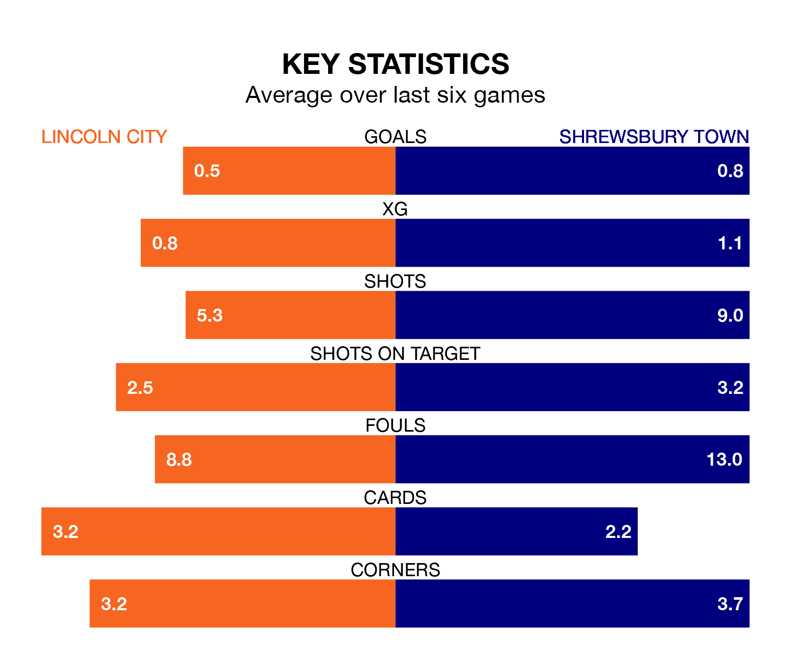

Lincoln City are on a terrible run ahead of hosting Shrewsbury Town at the LNER Stadium on Saturday, with just two points collected from their last six games.
The Imps have picked up two draws and four losses in their last six EFL League One games, and face a Shrews side whose last six games have brought two wins and four losses.
With 17 goals in 26 games so far this season, Shrewsbury are the league's joint-third-lowest scorers with 0.7 goals per game. And they are conceding more than average, letting in 36 goals at a rate of 1.4 per game.
Lincoln are also below average scorers, with 1.1 goals per game, compared to a league average of 1.3. They have also conceded 1.1 goals per game.
In the last three years, Lincoln and Shrewsbury have played each other on seven occasions. Lincoln won three of them, Shrewsbury two, and they drew twice.
On average, the Imps scored 0.9 goals and the Shrews 0.9 in those matches.
Their last meeting was on August 19, when Lincoln won 1-0 away.
Town are 14th in the table after 26 games, of which they have won nine and drawn three, earning 30 points.
City are two places ahead of the Shrews in 12th, with eight wins and eight draws putting them on 32 points.
Lincoln's last match was on Monday, a 2-0 loss against Blackpool.
Shrewsbury beat Fleetwood Town 3-1 last time out, also on Monday, with Cheyenne Dunkley, Jordan Shipley and Nohan Kenneh on the scoresheet.
Updated: 12:57, 02/01/24